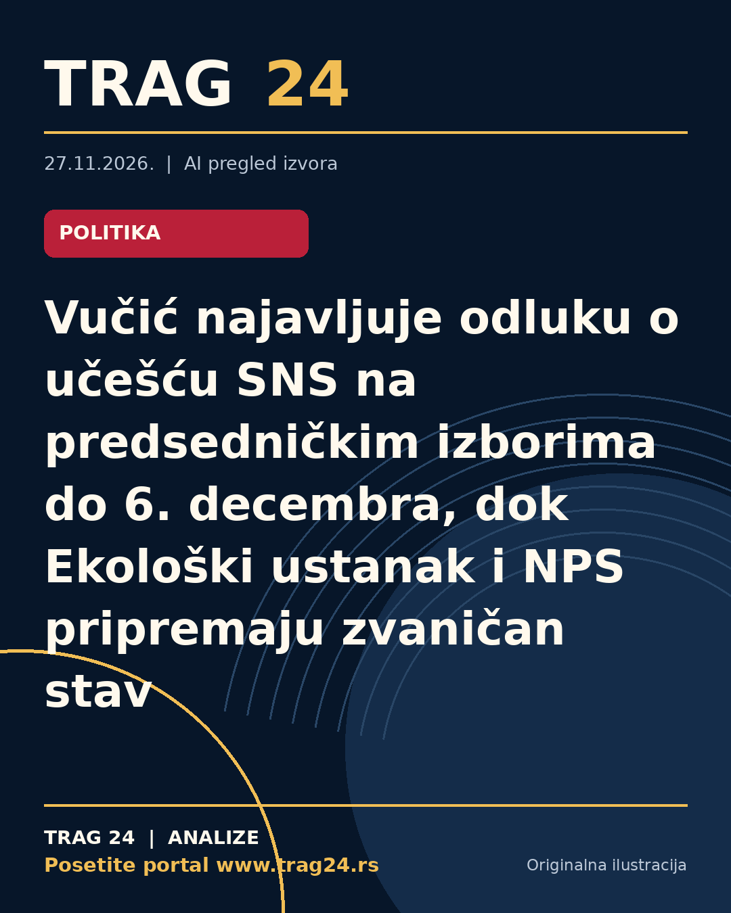

Vučić najavljuje odluku o učešću SNS na predsedničkim izborima do 6. decembra, dok Ekološki ustanak i NPS pripremaju zvaničan stav

ŠTA SE DOGODILO
Lider Srpske napredne stranke (SNS) Aleksandar Vučić izjavio je da će odluka o učešću te stranke na predstojećim predsedničkim izborima biti doneta i saopštena do 6. decembra. Istovremeno, Koalicija Ekološki ustanak i Narodni pokret Srbije (NPS) najavila je da će u ponedeljak zajednički saopštiti zvaničan stav o izborima, izrazivši spremnost da podrže kandidata Studentske liste Radomira Saičića.
HRONOLOGIJA
Vučić je izjavio za medije da će odluka o učešću SNS biti doneta pre krajnjeg roka za prijavu kandidata koji ističe 6. decembra. Prethodno je forume stranke, Predsedništvo i Glavni odbor planirano da zasedu početkom decembra, najverovatnije između 3. i 5. decembra. Sa svoje strane, ekološki aktivisti i NPS su u oktobru povukli svoju kandidaturu za parlamentarne izbore i potom najavili zvaničan stav za naredni dan ponedeljak, uoči roka za prijavu predsedničkih kandidata.
ŠTA NAVODE IZVORI
Iz B92 i Nove.rs prenosi se da Vučić ističe da za sada ne postoji odluka o direktnom učešću ili podršci drugom kandidatu, ali najavljuje formalni skup dok stranka zaseda. On je takođe komentarisao pitanja policijskih postupaka i unutrašnje politike. Ekološki ustanak preko Danijele Nestorović navodi da podržavaju kandidata Studentske liste Radomira Saičića, ali da će zvaničnu odluku zajednički sa NPS objaviti u ponedeljak. Navode se i kandidature drugih ljudi poput advokata Branka Pavlovića i stručnjaka sa Studentske liste.
ŠTA JE POTVRĐENO
Potvrđeno je da SNS planira odluku o učešću na predsedničkim izborima doneti najkasnije do 6. decembra, a da će prethodno održati stranačke skupove. Takođe je potvrđeno da Ekološki ustanak i NPS pripremaju zajedničku zvaničnu izjavu o predstojećim izborima u ponedeljak. Kandidatura Radomira Saičića za predsednika od strane Studentske liste je otvoreno saopštena i nije osporena.
ŠTA NIJE POTVRĐENO
Nije potvrđeno da li će SNS imati sopstvenog kandidata ili će podržati nekog drugog na predsedničkim izborima, kao ni tačan datum donošenja odluke unutar stranke dok traje proces donošenja odluka. Informacije o unutrašnjim detaljima kampanje i mogućim koalicijama ostaju nejasne. Nije potvrđeno ni kako će konkretno izgledati podrška Ekološkog ustanka i NPS kandidatu Saičiću u narednoj kampanji.
ŠTA OSTАJE OTVORENO: Ostaje neizvesno konačno učešće i eventualna kandidatura SNS u predsedničkoj trci, budući da odluka još nije formalno doneta niti saopštena. Takođe je otvoreno pitanje da li će SNS eventualno podržati drugog kandidata. Detalji o zajedničkoj odluci Ekološkog ustanka i NPS, kao i uticaj njihove podrške na izborni proces, biće jasniji nakon saopštenja koje je najavljeno za ponedeljak. Praćenje daljeg razvoja situacije ostaje relevantno u narednim danima uoči roka za prijavu kandidata.
Izvori
- https://www.b92.net/info/politika/288736/aleksandar-vucic-o-predsednickim-izborima-u-srbiji-i-uvodjenju-sankcija-rusiji/vest
- https://nova.rs/vesti/politika/sns-e-odluku-o-izborima-saoptiti-poetkom-decembra/
- https://insajder.net/prenosimo/nestorovic-ekoloski-ustanak-u-ponedeljak-cemo-zajedno-sa-nps-saopstiti-odluku-o-predsednickim-izborima
Ova analiza je pripremljena uz pomoć veštačke inteligencije na osnovu javno dostupnih izvora. Navodi izvora nisu nužno nezavisno potvrđeni.